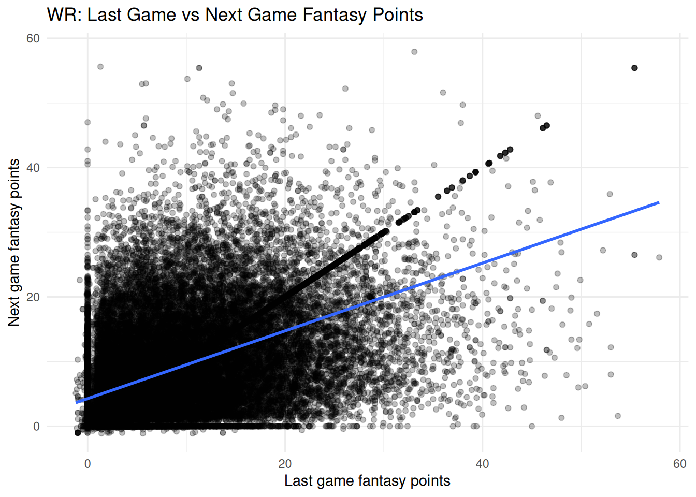

Code
#install.packages("remotes")
#remotes::install_github("DevPsyLab/petersenlab")
#remotes::install_github("FantasyFootballAnalytics/ffanalytics")
#update.packages(ask = FALSE)Jordan Wozniak
October 30, 2025
player_stats_weekly_subset <- player_stats_weekly %>%
filter(!is.na(player_id))
nfl_playerIDs_subset <- nfl_playerIDs %>%
filter(!is.na(gsis_id)) %>%
distinct(gsis_id, .keep_all = TRUE) %>% # keep only rows that do not have duplicate values of gsis_id
select(-all_of(c("team", "position", "height", "weight", "age")))
players_projectedPoints_weekly_combined$season <- as.integer(players_projectedPoints_weekly_combined$season)
players_projections_weekly_average_merged$season <- as.integer(players_projections_weekly_average_merged$season)
player_stats_weekly_subset_IDs <- left_join(
player_stats_weekly_subset,
nfl_playerIDs_subset,
by = c("player_id" = "gsis_id")
) %>%
filter(!is.na(mfl_id))
projectionsWithActuals_weekly <- full_join(
player_stats_weekly_subset_IDs,
players_projectedPoints_weekly_combined,
by = c("mfl_id" = "id", "season", "week"),
suffix = c("", "_proj"),
)
crowdAveragedProjectionsWithActuals_weekly <- full_join(
player_stats_weekly_subset_IDs,
players_projections_weekly_average_merged,
by = c("mfl_id" = "id", "season", "week"),
suffix = c("", "_proj"),
)
projectionsWithActuals_weekly <- projectionsWithActuals_weekly %>%
unite(
"player_id_season_week",
player_id,
season,
week,
remove = FALSE
)
crowdAveragedProjectionsWithActuals_weekly <- crowdAveragedProjectionsWithActuals_weekly %>%
unite(
"player_id_season_week",
player_id,
season,
week,
remove = FALSE
)AI Disclosure: AI was not used.
Link to AI Transcript: not applicable
Background: Fantasy evaluations often overweight the last game and TDs, which are low-base-rate and noisy. We test whether richer WR projections outperform “last-week” heuristics.
Method: Using Chapter 17 accuracy metrics, we compared (1) last-week points, next-game points, (2) projected WR TDs, actual TDs, and (3) projected WR receiving yards → actual yards (MAE, RMSE, R²).
Results: (1) MAE≈5.05, RMSE≈7.95, R²≈0.048—small signal; (2) MAE≈0.34 TDs, RMSE≈0.51, R²≈0.018—minimal signal; (3) MAE≈22.5 yds, RMSE≈30.6, R²≈0.31—materially stronger discrimination.
Discussion: “Last week” helps only as a baseline and TDs are hard to predict; prioritize volume-based projections (e.g., yards/targets) and avoid over-weighting TDs in WR start/sit decisions.
One of our popular evaluations to value a player’s next week fantasy point production is to analyze their previous week’s performance. However, we can over-predict these values. I think of this as the Ryan Fitzpatrick problem that I once occured upon when playing fantasy football. To set the scene, Ryan Fitzpatrick was the starting quarterback over the suspended Jameis Winston. Fitzpatrick was electric, hense the name “Fitzmagic.” He threw for over 1200 yards, 12 TDs passing, 1 rushing, and only 3 interceptions. He was 2-1 in that span, and scored 40+, 30+, and 25+ in that span. Then, we over-predicted his performance in the next week, and strayed away from the light, he was 0-5 in the next games, and had a negative ratio of TD/INT. This is just one of many examples where we look at the last game, or previous game, and overpredict how well they do.
Can last week fantasy point performances predict well, or create over-prediction for valuing next week performances. Are there other factors that we should consider following different statistics to convince us to start a player over another player? In other words, should be only rely on the fantasy point numbers? Or does it blind us?
“Last week” is a useful but limited predictor—better than guessing, but often overconfident; a simple elastic-net that blends targets, yards, TDs, etc. usually beats it, so treat “last week” as a baseline, not the final word.
When predicting fantasy points values from week to week, with the reference to the previous week, it can become really hard to do so. There are countless factors and confounding variables that can play into predicting values. If a WR for instance scores 30 points, one would predict that they would score maybe 20, or 25. Wouldn’t that in turn create recency bias?
I created a few analytics used from Chapter 17, “Evaluation of Prediction/Forecasting Accuracy” for continuous binary evaluation. I used one for fantasy points, one for TDs (touchdowns), and one for receiving yards. The main one is the first one, and then the other two to prove that the first one is a baseline only, and only should be used as such.
# WR next-game target and "last-week" baseline
wr_baseline <- projectionsWithActuals_weekly %>%
filter(position_group == "WR") %>%
arrange(player_id, season, week) %>%
group_by(player_id, season) %>%
mutate(
next_fp = lead(fantasyPoints),
last_fp = lag(fantasyPoints)
) %>%
ungroup() %>%
select(player_id, season, week, next_fp, last_fp) %>%
drop_na(next_fp, last_fp)
# Evaluate baseline (last game -> next game)
petersenlab::accuracyOverall(
predicted = wr_baseline$last_fp,
actual = wr_baseline$next_fp,
dropUndefined = TRUE
)Warning in log(predicted + 1): NaNs producedWarning in log(actual + 1): NaNs producedplayer_stats_weekly_subset <- player_stats_weekly %>%
dplyr::filter(!is.na(player_id))
nfl_playerIDs_subset <- nfl_playerIDs %>%
dplyr::filter(!is.na(gsis_id)) %>%
dplyr::distinct(gsis_id, .keep_all = TRUE) %>%
dplyr::select(-dplyr::all_of(c("team","position","height","weight","age")))
players_projectedPoints_weekly_combined$season <- as.integer(players_projectedPoints_weekly_combined$season)
players_projections_weekly_average_merged$season <- as.integer(players_projections_weekly_average_merged$season)
player_stats_weekly_subset_IDs <- dplyr::left_join(
player_stats_weekly_subset, nfl_playerIDs_subset,
by = c("player_id" = "gsis_id")
) %>% dplyr::filter(!is.na(mfl_id))
projectionsWithActuals_weekly <- dplyr::full_join(
player_stats_weekly_subset_IDs,
players_projectedPoints_weekly_combined,
by = c("mfl_id" = "id", "season", "week"),
suffix = c("", "_proj")
)1: Last-week points to next-game points MAE ≈ 5.05 pts, RMSE ≈ 7.95, R² ≈ 0.048, explains ~5% of variation; useful signal but weak as a stand-alone predictor.
2: Projected WR receiving TDs tp actual TDs MAE ≈ 0.34 TDs, RMSE ≈ 0.51, R² ≈ 0.018, very low explanatory power; TDs are sparse/low-base-rate and hard to predict,
3: Projected WR receiving yards tp actual yards MAE ≈ 22.5 yds, RMSE ≈ 30.6, R² ≈ 0.31, materially better discrimination than TDs and far stronger than “last week” for points.
Our WR analyses show a clear pattern consistent with Chapter 17: low-base-rate events (TDs) are hard to predict, while continuous outcomes (yards, points) are more predictable. “Last-week points → next-game points” had small signal (R²≈.05), projected receiving yards → actual yards had moderate signal (R²≈.31), and projected TDs → actual TDs had minimal signal (R²≈.02). This aligns with the text’s emphasis on discrimination vs. calibration and on the difficulty of predicting rare outcomes.
The hypothesis that “last week misleads” is partly supported: last-game points beat guessing but are far weaker than a richer projection for yards. Practically, using only last week risks overreacting to noise.
What is the takeaway? Treat “last week” as a baseline, not a strategy; prioritize volume metrics (targets, routes, air yards) and calibrated projection systems for WR decisions, and avoid over-weighting TDs in weekly start/sit calls.
Strengths: -Position/metric-specific analysis connects directly to base-rate theory (yards vs. TDs). -Plain, cutoff-free evaluation for continuous outcomes
-No cross-validated modeling or elastic-net comparison yet—only baseline/projection accuracy summaries. -No clustering or calibration diagnostics; injuries/roles/opponents and reliability curves aren’t modeled or shown.
“Last week” has signal but not much: it predicts WR next-game points weakly (low R² ≈ .05) and TDs are especially noisy (very low R² ≈ .02; large MAPE). Yardage/volume metrics are far more stable (receiving-yards projections explain ~30% of variance), so treat “last week” as a baseline and favor multi-feature models and target/yard volume over touchdown spikes when making decisions.
ggplot2::ggplot(wr_baseline, ggplot2::aes(x = last_fp, y = next_fp)) +
ggplot2::geom_point(alpha = 0.25) +
ggplot2::geom_smooth(method = "lm", se = FALSE) +
ggplot2::labs(
title = "WR: Last Game vs Next Game Fantasy Points",
x = "Last game fantasy points",
y = "Next game fantasy points"
) +
ggplot2::theme_minimal()`geom_smooth()` using formula = 'y ~ x'
There’s a weak, noisy positive relationship—last week’s WR points carry some signal, but variance is huge and most big games regress toward the mean next week.
https://arxiv.org/pdf/1505.06918
R version 4.5.1 (2025-06-13)
Platform: x86_64-pc-linux-gnu
Running under: Ubuntu 24.04.3 LTS
Matrix products: default
BLAS: /usr/lib/x86_64-linux-gnu/openblas-pthread/libblas.so.3
LAPACK: /usr/lib/x86_64-linux-gnu/openblas-pthread/libopenblasp-r0.3.26.so; LAPACK version 3.12.0
locale:
[1] LC_CTYPE=C.UTF-8 LC_NUMERIC=C LC_TIME=C.UTF-8
[4] LC_COLLATE=C.UTF-8 LC_MONETARY=C.UTF-8 LC_MESSAGES=C.UTF-8
[7] LC_PAPER=C.UTF-8 LC_NAME=C LC_ADDRESS=C
[10] LC_TELEPHONE=C LC_MEASUREMENT=C.UTF-8 LC_IDENTIFICATION=C
time zone: UTC
tzcode source: system (glibc)
attached base packages:
[1] stats graphics grDevices utils datasets methods base
other attached packages:
[1] lubridate_1.9.4 forcats_1.0.1 stringr_1.5.2 dplyr_1.1.4
[5] purrr_1.1.0 readr_2.1.5 tidyr_1.3.1 tibble_3.3.0
[9] ggplot2_4.0.0 tidyverse_2.0.0 petersenlab_1.2.0
loaded via a namespace (and not attached):
[1] tidyselect_1.2.1 psych_2.5.6 viridisLite_0.4.2 farver_2.1.2
[5] S7_0.2.0 fastmap_1.2.0 digest_0.6.37 rpart_4.1.24
[9] timechange_0.3.0 lifecycle_1.0.4 cluster_2.1.8.1 magrittr_2.0.4
[13] compiler_4.5.1 rlang_1.1.6 Hmisc_5.2-4 tools_4.5.1
[17] yaml_2.3.10 data.table_1.17.8 knitr_1.50 labeling_0.4.3
[21] htmlwidgets_1.6.4 mnormt_2.1.1 plyr_1.8.9 RColorBrewer_1.1-3
[25] foreign_0.8-90 withr_3.0.2 nnet_7.3-20 grid_4.5.1
[29] stats4_4.5.1 lavaan_0.6-20 xtable_1.8-4 colorspace_2.1-2
[33] scales_1.4.0 MASS_7.3-65 cli_3.6.5 mvtnorm_1.3-3
[37] rmarkdown_2.30 reformulas_0.4.2 generics_0.1.4 rstudioapi_0.17.1
[41] reshape2_1.4.4 tzdb_0.5.0 minqa_1.2.8 DBI_1.2.3
[45] splines_4.5.1 parallel_4.5.1 base64enc_0.1-3 mitools_2.4
[49] vctrs_0.6.5 boot_1.3-31 Matrix_1.7-3 jsonlite_2.0.0
[53] hms_1.1.4 Formula_1.2-5 htmlTable_2.4.3 glue_1.8.0
[57] nloptr_2.2.1 stringi_1.8.7 gtable_0.3.6 quadprog_1.5-8
[61] lme4_1.1-37 pillar_1.11.1 htmltools_0.5.8.1 R6_2.6.1
[65] Rdpack_2.6.4 mix_1.0-13 evaluate_1.0.5 pbivnorm_0.6.0
[69] lattice_0.22-7 rbibutils_2.3 backports_1.5.0 Rcpp_1.1.0
[73] gridExtra_2.3 nlme_3.1-168 checkmate_2.3.3 mgcv_1.9-3
[77] xfun_0.54 pkgconfig_2.0.3